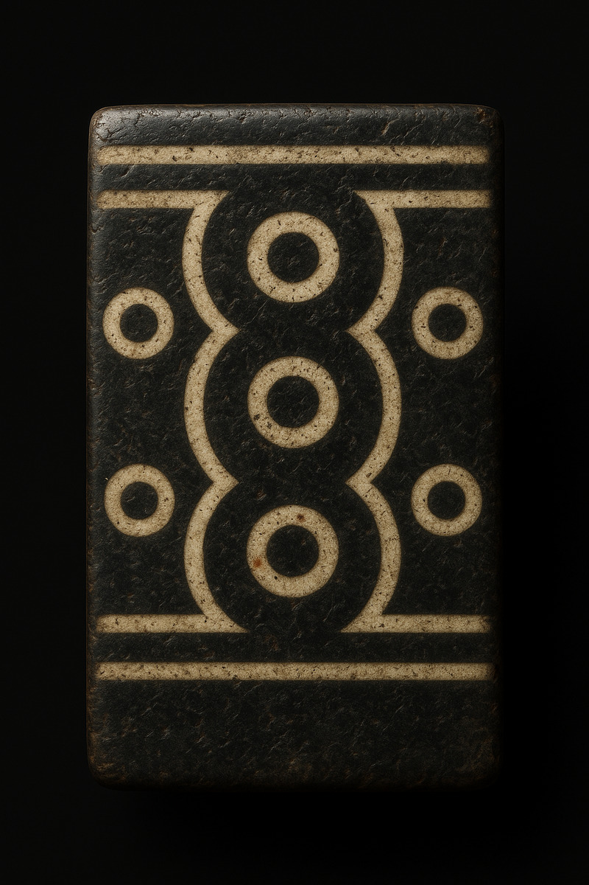
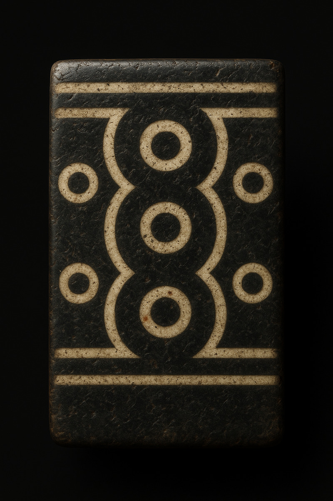

Modern Stories & Mystique — The Nagoya Survivor’s Bead
In the 1990s, a China Airlines jet tragically crashed in Nagoya, Japan. Amid the devastation, one passenger emerged almost unharmed, wearing a single Dzi bead. To this day, collectors speak of the “Nagoya Survivor’s Bead” as living proof of the relic’s mystical protection.
Why So Few People Know About Dzi Beads
Unlike diamonds or gold, the Dzi was never meant for the masses. It is a secret known to Himalayan highlanders and a handful of collectors, mystics, and monks. In modern times, a few lucky souls, including certain celebrities wear them quietly, never advertising their ownership, simply enjoying the silent influence of the bead. This silence is part of the mystery… and part of its power.
Famous Wearers

Huang Shengyi

Jet Li

Michael Schumacher

Michelle Yeoh
Queen of Bhutan

Reinhold Messner
Sammo Hung

Sting
Dzi NFT Gallery

 

Our Team

Amina
Creative Director

Lhamo
Spiritual Advisor

Mehra
Web Developer

Sato
Blockchain Engineer
Padma Raga
France Center - Coordinator
Contact Us
Have a question? Want to own a piece of living legend?
üìß Email: contact@yakkidoge.xyz
üåê Website: nft.yakkidoge.xyz
Follow the journey-the Nine-Eyed Dzi NFT is here to bridge millennia of history with the boundless frontier of digital art.
For inquiries about the Tibetan Dzi NFT Collection, please email contact@yakkidoge.xyz